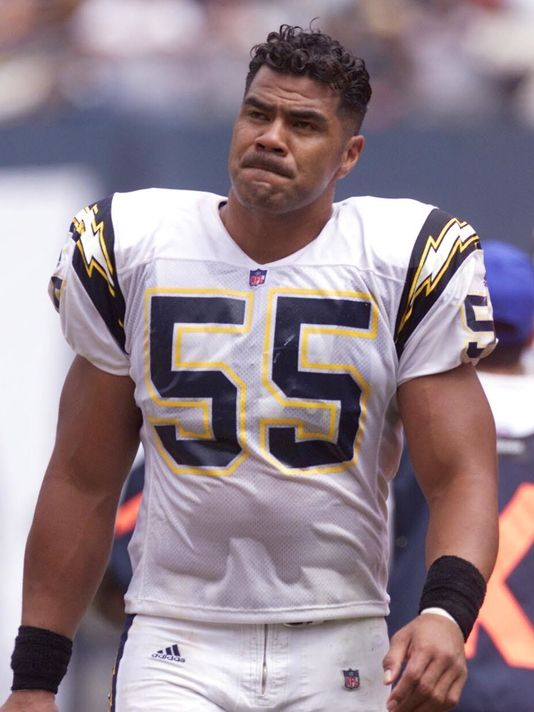

- Tyler Sash, 27
- Mike Webster, 50
- Earl Morall, 79
- Dave Duerson, 50
- Jovan Belcher, 25
- Chris Henry, 26
- Aaron Hernandez, 27
- Scott Ross, 45
- Junior Seau, 43
- Terry Long, 45
- Mosi Tatupu, 54
- Kevin Turner, 46
- Ralph Wenzel, 69
- Ray Easterling, 62
- John Grimsley, 45

Junior Seau played in the NFL for 19 years. He played, most notably, for the San Diego Chargers and
the New England Patriots. In May of 2012, it was found that Seau commited suicide; he left a note
requesting his brain to be studied. In 2013, it was found that Seau;s brain showed definitive signs
of CTE.

Jovan Belcher played in the NFL for the Kansas City Chiefs for three years. In early December of
2012, Jovan Belcher committed suicide after shooting and killing his girlfriend. His family requested his brain to
be examined, it was found that Belcher had advanced CTE. This case is one of the most high-profile cases of CTE to date.